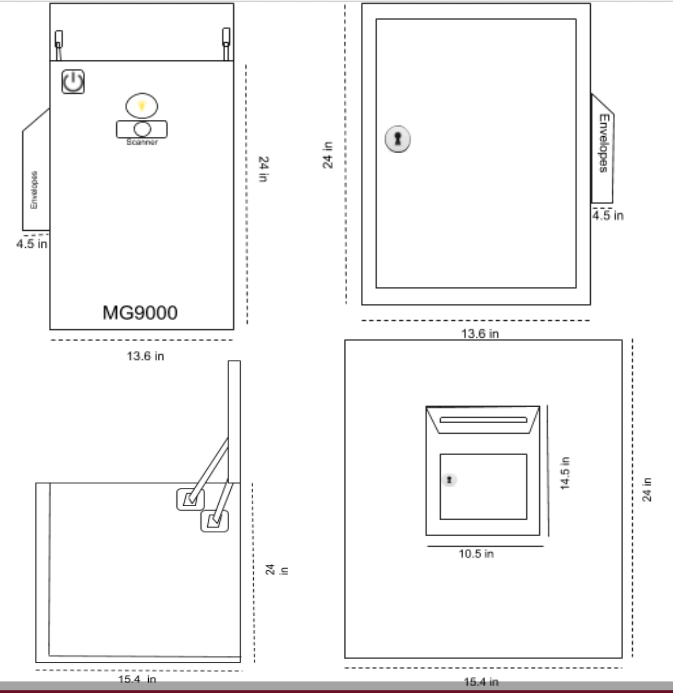

CSE Major
Team Coordinator
Backend (AWS) Developer
CSE Major
Budget Management Lead
Front End Mobile App Developer
EE Major
Altium Lead
Hardware Developer 1
CSE Major
Box and Pamphlet Designer
Hardware Developer 2
Team Advisor
MG9K - Smart Postal Security
Package security is a large concurrent issue that has been further bolstered by our increasing reliance on the postal service. Through the ongoing years, retail giants (i.e. JcPenney and Sears) have continuously closed and became scarce, being usurped by commercial sites such as Amazon and Ebay. The advent of the COVID Pandemic has pushed us into quarantine, and further bolstered the importance of online shopping as both a means of avoiding the spread of disease, as well as simply a more convenient means of merchandise reception. Thus, this growing dependency on postal packages directly correlates to a greater demand in safe package reception and security. This call is answered by our project, the Mail Gobbler 9000 (MG9K).
The MG9K is a smart dropbox that fortifies postal security through authentication of received packages. Barcodes for expected packages are preloaded by the user via a mobile application, as to validate received packages, which upon successful scan and validation unlocks the locked dropbox. Various quality of life features are included, such as an additional smart mail slot, real time notifications for both mail and package deliveries, and a dedicated mobile application for communication, unlocking mechanisms, and to display historic logs. Whereas solutions towards this means exist, the MG9K offers a low power system that solely relies on rechargeable batteries, to avoid the hassles of in-home wiring and electrical demand.
The MG9K is a smart drop box that provides postal security through means of package barcode authorization. Users store expected package barcodes within a mobile application, for which incoming packages need to match and verify with. Along with this means of security, the MG9K provides various quality of life features such as package and mail delivery notifications, multiple unlocking mechanisms (mobile and physical backdoor), and display of historic logs. Compared with other competitive smart drop boxes on the market, the MG9K highlights in providing a power efficient and low cost means to fortify postal security.

The smart dropbox has a dedicated mobile app, (with example screenshots displayed on the right), that
provides multiple functionalities. The mobile app allows a user to log on, store expected package bar codes,
unlock the box remotely, and view logs of scanned barcode instances and package delivery instances.
We've chosen to write our application with xCode, and have it work on iOS devices. It uses the AWS AppSynch service in order to
to communicate with our AWS backend. This enables the app to access backend database tables along with using AWS IoT to communicate within
the physical dropbox.